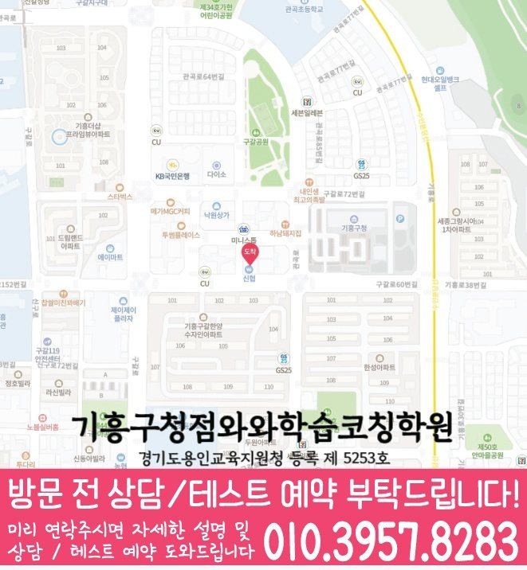

MIDDLE SCHOOL MATH GUIDE
신갈동 중2 수학학원
경기 용인시 신갈동 중2 수학학원 선택을 위해 와와학습코칭센터 기흥구청점 공개 정보와 중2 내신·오답 관리 기준, 수업 가능 학교와 상담 체크 항목을 정리했습니다.
신갈동경기 용인시
중2수학 가능 학년 기재



핵심 답변
신갈동 중2 수학학원, 무엇부터 확인해야 할까요?
신갈동에서 중2 수학학원을 비교할 때는 현재 진도만 보지 말고 이전 개념 공백, 풀이 과정, 오답 재확인 방식과 시험 전 계획을 함께 살펴야 합니다. 계산은 빠르지만 풀이 단계를 생략해 서술형에서 감점이 생기는 학생이라면 특히 관리 기록이 다음 수업에 어떻게 반영되는지 확인하는 것이 좋습니다.
LOCAL ACADEMY GUIDE
경기 용인시 신갈동 중2 수학 학습 설계
경기 용인시 기흥구 신갈동에서 중2 수학학원을 찾는 학생을 위해, 개념 진단부터 내신 유형 학습, 오답 관리, 시험 전 실력 점검까지 이어지는 체계적인 학습 흐름을 안내합니다. 와와학습코칭센터는 학생별로 현재 실력과 약한 단원을 먼저 확인하고, 수업과 코칭을 통해 시험에서 시험 준비에 반영되도록 꾸준히 관리합니다.
신갈동 중2 수학 수업의 핵심 포인트
처음부터 많은 문제를 풀기보다, 중2 수학에서 자주 끊기는 개념과 풀이 습관을 진단해 학습 우선순위를 정합니다.
교과서·단원별 핵심 유형을 단계적으로 반복해 실수를 줄이고, 서술형·변형 문제에도 대응할 수 있게 훈련합니다.
선생님 특징
왜 막히는지(개념/계산/조건 해석)를 먼저 확인하고, 같은 실수가 반복되지 않도록 핵심 원리부터 다시 연결해 줍니다.
틀린 이유를 유형별로 정리해 다음 풀이에서 어떻게 달라져야 하는지까지 코칭하며, 오답 노트가 실제 실력 향상으로 이어지게 관리합니다.
수업 진행방식
1. 현재 수준 확인
중2 과정의 최근 학교 진도와 시험 흐름을 바탕으로, 부족한 단원과 자주 틀리는 문제 유형을 체크합니다.
2. 개념 정리와 내신 유형 학습
바로 문제풀이로 넘어가지 않고 개념을 정리한 뒤, 대표 유형→단원 심화→서술형/변형 순서로 단계적 연습을 진행합니다.
3. 오답 관리와 학습 피드백
오답을 단순 재풀이하지 않고, 오답 원인(조건 누락·계산 실수·개념 적용 오류 등)을 분류해 다음 시험에서 같은 실수를 줄이도록 피드백합니다.
중2 학습 전략(수학)
단원 개념 탄탄히
- 중2 수학의 핵심 개념을 ‘시험에 나오는 형태’로 먼저 정리합니다.
- 문제풀이 중 막히는 지점을 개념으로 연결해 다시 풀 수 있게 만듭니다.
내신 서술형·변형 대응
- 단원별 빈출 유형을 반복해 서술 과정과 조건 해석을 안정화합니다.
- 같은 개념을 다양한 방식으로 푸는 훈련으로 점수 격차를 줄입니다.
계산·실수 관리
- 자주 나오는 계산 실수 패턴을 점검하고 점검 루틴을 만듭니다.
- 오답 유형별로 다시 연습할 ‘다음 단계 문제’까지 지정합니다.
시험 전 마무리 코칭
- 학교 학생이 가져온 시험 범위를 확인한 뒤 복습 계획을 조정하고 집중 단원을 정합니다.
- 시험 전에는 실수 유형과 취약 유형을 우선 점검해 안정적으로 대비합니다.
용인시 기흥구 신갈동 중2 수학학원으로 와와학습코칭센터를 찾는다면, 학생의 현재 상태를 기준으로 필요한 개념과 내신 유형 학습을 정리하고 상담을 통해 수학 학습 방향을 구체적으로 안내드립니다.
INDIVIDUAL DIAGNOSIS
신갈동 중2 수학 진단을 실제 기록으로 좁히는 방법
신갈중 자료를 기준으로 보면 현재 진도와 누적 공백 중 무엇을 먼저 다뤄야 하는지 더 구체적으로 정할 수 있습니다. 특히 서술형에서 식은 세웠지만 근거 문장을 빠뜨리는 답안를 찾아야 합니다. 틀린 문제를 난도별로 묶지 않고 오류 원인별로 묶어 다음 복습 순서를 정합니다. 한 주 뒤 누적 확인 문제에서 풀이 순서를 재현하는지 점검합니다.
도형
주어진 조건을 그림에 표시하고 사용할 성질과 결론 사이의 근거를 순서대로 적습니다. 답을 가린 재풀이와 숫자·조건을 바꾼 적용 문제를 구분해 이해 여부를 확인합니다.
방정식과 함수
조건을 식으로 바꾸는 과정과 표·식·그래프 사이의 연결을 말로 설명하게 합니다. 풀이를 개념 이해·조건 해석·계산·검산 네 단계로 나누어 멈춘 위치를 표시합니다.
서술형
계산식뿐 아니라 사용한 개념, 조건과 결론이 답안에 드러나는지 단계별로 점검합니다. 학생이 말로 설명한 풀이와 종이에 쓴 식이 같은 흐름인지 대조합니다.
신갈중을 기준으로 살펴볼 4단계 실행 흐름
계산은 빠르지만 풀이 단계를 생략해 서술형에서 감점이 생기는 학생에게 적용할 수 있는 비교용 예시입니다. 실제 진도와 분량은 진단 결과, 학교 일정과 주중 복습 가능 시간을 확인한 뒤 조정해야 합니다.
범위 나누기
남은 기간과 단원별 완료 기준을 현실적인 분량으로 정합니다. 완료 기록과 실제 재풀이 결과가 일치하는지 다음 수업에서 대조합니다.
약점 우선
가장 자주 반복된 오류를 먼저 줄이는 연습을 진행합니다. 학생이 스스로 질문을 만들고 필요한 개념을 찾아 설명하는지 봅니다.
실전 연결
서술형과 시간 제한 문제에 검산 순서를 적용합니다. 틀렸던 이유와 고친 이유를 서로 다른 문장으로 설명할 수 있는지 확인합니다.
기록 갱신
새로운 오답과 해결된 오답을 나눠 계획표를 갱신합니다. 시험 범위 안에서 다시 등장한 유형에 같은 검산 기준을 적용하는지 확인합니다.
신갈동 학부모가 수업을 비교할 때는 진도표만 보지 말고 개념 문제와 응용 문제 중 어느 구간에서 풀이가 멈추는지, 재풀이 날짜와 완료 기록이 다음 수업에 실제로 반영되는지 확인하는 것이 좋습니다.
VERIFIED LOCAL FACTS
신갈동 센터 정보와 수업 확인 항목
공개된 센터 자료만 사용했으며, 기재되지 않은 학교나 운영 조건은 임의로 만들지 않았습니다.
경기 용인시 기흥구 구갈로60번길 15 경영빌딩 3층 와와학습코칭학원
공개 센터 자료의 수학 가능 학년에 중2가 포함되어 있습니다. 실제 반 편성과 일정은 와와학습코칭센터 기흥구청점 상담에서 확인해야 합니다.
경기도용인교육지원청 등록 제 5253호
주당 횟수·시간표·보강 기준과 함께 비교합니다.
기흥구청 앞 신협 건물 3층, 한양수자인 103동 건너편
공개 자료의 중학교 안내 · 3개
공개 자료의 수학 가능 학년
센터 교습비 자료 확인상담 전 체크리스트
신갈동 중2 수학학원 비교 전에 적어둘 내용
시험 범위가 아직 없다면 현재 교재와 이전 시험의 누적 오답부터 정리합니다. 자료에 없는 학교 일정은 임의로 단정하지 않고 신갈동 상담에서 확인합니다.
개념 문제와 응용 문제 중 어느 구간에서 풀이가 멈추는지를 최근 답안에서 확인합니다.
신갈동의 실제 통학·귀가 시간을 제외하고 확보 가능한 복습 시간을 계산합니다.
중2 수학 기재 내용을 확인하고 실제 시간표는 상담에서 다시 확인합니다.
FAQ & PARENT VIEW
신갈동 중2 수학학원 자주 묻는 질문과 학부모 상담 관점
질문과 답변은 같은 내용으로 JSON-LD에도 반영했습니다. 아래 내용은 실제 후기를 가장한 문장이 아니라 학부모가 상담에서 확인할 비교 기준입니다.
신갈동 중2 수학학원은 어떤 학생에게 맞는지 어떻게 판단하나요?
계산은 빠르지만 풀이 단계를 생략해 서술형에서 감점이 생기는 학생이라면 진단 과정과 재풀이 확인 방식을 먼저 살펴보세요. 학원 이름이나 문제량만 비교하기보다 학생이 혼자 풀 수 있게 되는 과정을 확인해야 합니다. 최근 풀이에서 개념·계산·조건 해석 오류를 먼저 구분합니다라는 원칙이 수업 기록에 남는지도 함께 살펴보세요.
학교별 내신 대비 자료도 확인할 수 있나요?
공개 센터 자료에는 구갈중, 신갈중, 신릉중 등이 수업 가능 학교로 안내되어 있습니다. 학교별 시험 범위와 일정은 달라질 수 있으므로 상담할 때 현재 학교 자료를 함께 확인하는 것이 좋습니다. 계산은 빠르지만 풀이 단계를 생략해 서술형에서 감점이 생기는 학생이라면 문제량보다 혼자 다시 해결한 범위를 근거로 판단해야 합니다.
상담할 때 수업 시간표와 교습비도 확인해야 하나요?
네. 공개된 교습비 자료와 함께 주당 횟수, 시작·종료 시각, 결석·보강 기준, 시험 기간 일정 변동을 같은 표에 적어 비교하는 것이 좋습니다. 신갈동에서는 최근 풀이 기록과 실제 주중 일정을 함께 놓고 이 기준을 확인하세요.
중2 수학 수강 가능 여부는 어디에서 확인하나요?
공개된 와와학습코칭센터 기흥구청점 가능 학년 정보에 중2 수학이 포함되어 있습니다. 실제 시간표, 반 편성 및 시작 가능일은 변동될 수 있어 상담 시 다시 확인해야 합니다. 와와학습코칭센터 기흥구청점 상담에서는 이 항목이 다음 과제와 재풀이 날짜에 어떻게 반영되는지도 질문하는 것이 좋습니다.
숙제의 양보다 먼저 확인할 기준이 있나요?
학생이 실제로 끝낼 수 있는 분량인지, 막힌 문제를 표시하는지, 제출 뒤 오답을 다시 풀 날짜가 정해지는지를 확인해야 합니다. 완료 기준이 문제 수에만 머물지 않는 것이 중요합니다. 상담 전에 개념 문제와 응용 문제 중 어느 구간에서 풀이가 멈추는지를 적어 두면 신갈동 수업 방식을 더 구체적으로 비교할 수 있습니다.
신갈동 중2 수학학원 상담 전에 무엇을 준비하면 좋나요?
최근 시험지, 현재 수학 교재, 학교 진도와 반복 오답을 준비하면 좋습니다. 특히 개념 문제와 응용 문제 중 어느 구간에서 풀이가 멈추는지를 메모해 가면 상담 기준을 구체적으로 세울 수 있습니다. 학교 자료가 있다면 답만 보지 말고 풀이 흔적과 다시 푼 결과를 나란히 확인하는 편이 좋습니다.
중2 수학 내신은 진도와 복습 중 무엇을 먼저 봐야 하나요?
현재 학교 진도만 앞서가기보다 이전 단원의 공백과 최근 오답을 먼저 구분해야 합니다. 최근 풀이에서 개념·계산·조건 해석 오류를 먼저 구분합니다. 실제 적용 여부는 와와학습코칭센터 기흥구청점의 반 편성, 시간표와 학생 진단 결과를 확인한 뒤 결정합니다.
RELATED GUIDES
신갈동 중2 과목과 다른 지역 비교
같은 동네 영어 안내와 시군구·광역권을 우선한 수학 페이지를 상호 연결했습니다.